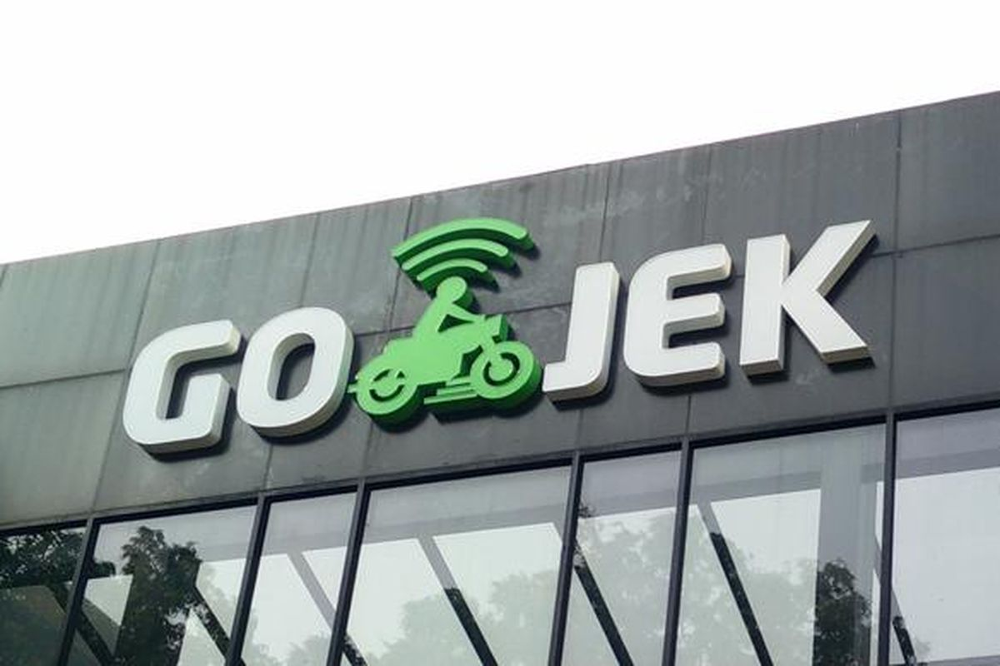
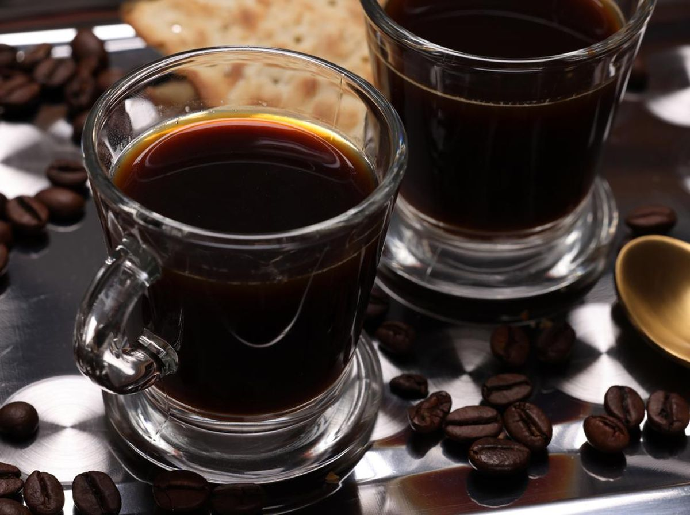
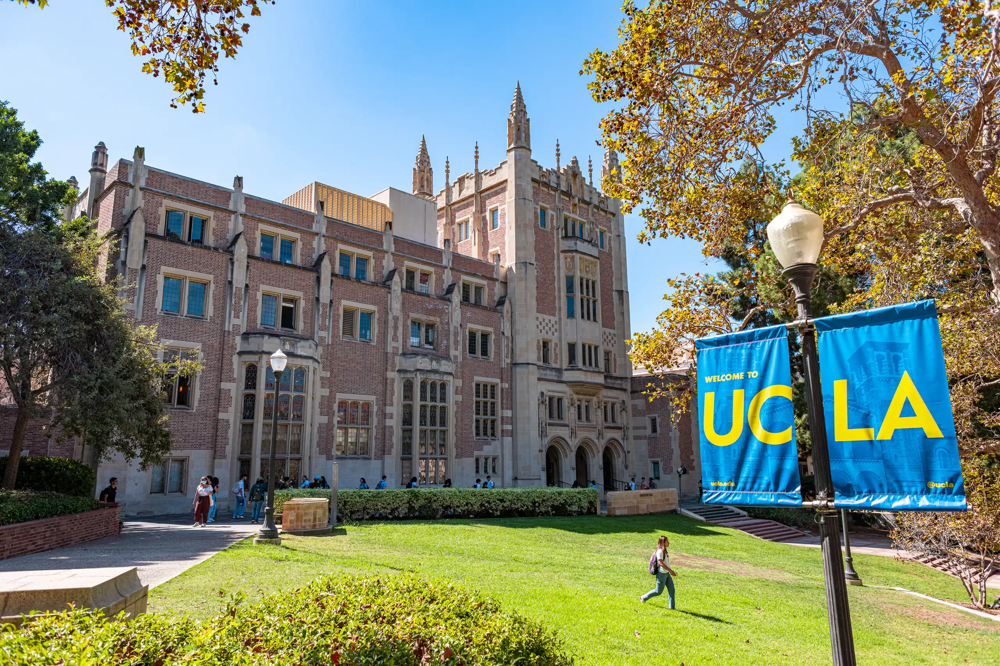
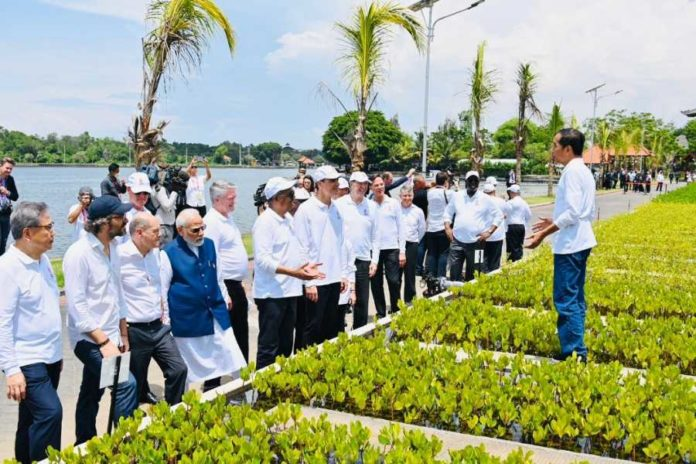
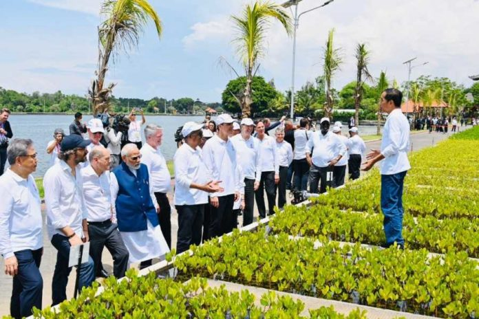

.png)





 

1. Teknologi dan Startup : California adalah pusat teknologi dunia, yang menjalin hubungan erat dengan industri teknologi di Indonesia. Beberapa startup besar Indonesia, seperti Gojek dan Tokopedia, menerima investasi dari perusahaan besar di California. Gojek yang mendapatkan dukungan dari Google, yang meningkatkan kapabilitas teknologi mereka, dan membuka akses luas pada teknologi digital canggih. Investasi ini memperkuat inovasi dan mendorong perkembangan layanan digital di Indonesia.
2. Perdagangan produk pertanian dan manufaktur : Pelabuhan Los Angeles & Long Beach di California adalah pintu masuk untuk berbagai produk ekspor Indonesia ke Maerika Serikat, seperti tekstil, kopi, alas kaki, dan produk agrikultur. Kopi dari Indonesia (khas Sumatra dan Java) sangat populer di kalangan masyarakat California. Banyak kafe di Los Angeles dan San Francisco menawarkan kopi asal Indonesia, seperti Starbucks sering memasukkan kopi Indonesia dalam produk mereka.
3. Edukasi dan pertukaran pelajar : University of California, Berkeley, dll memiliki program pertukaran pelajar dengan Indonesia, serta program beasiswa untuk mahasiswa Indonesia. Beberapa kampus ini juga bekerja sama dengan universitas di Indonesia dalam proyek penelitian. UCLA bekerja sama dengan universitas-universitas di Indonesia dalam bidang studi lingkungan & kesehatan masyarakat. Program ini membuat mahasiswa dan peneliti Indonesia untuk berkolaborasi dalam mengatasi isu-isu lingkungan dan kesehatan yang relevan bagi kedua belah pihak.
4. Pariwisata dan budaya : California menjadi destinasi wisata favorit bagi turis asal Indonesia, sementara warga California banyak yang suka mengunjungi Bali, ataupun destinasi wisata Indonesia yang lain. Adanya penerbangan langsung mempermudah arus wisata antara kedua wilayah. Event seperti “Festival Indonesia” yang diadakan di kota-kota besar di California. Menjadi salah satu bentuk promosi budaya. Festival ini menampilkan kuliner, musik tradisional, dan seni budaya Indonesia, sehingga warga California dapat lebih mengenal budaya Indonesia dan tertarik untuk berwisata ke Indonesia.
5. Ekonomi Hijau dan Lingkungan : California fokus pada isu lingkungan memiliki kolaborasi dengan Indonesia dalam bidang energi bersih. California berbagi teknologi serta praktik terbaik dalam penggunaan energi terbarukan dengan Indonesia Indonesia memiliki potensi besar untuk energi panas bumi, didukung oleh para investor dan perusahaan dari California untuk mengembangkan energi ini sebagai sumber energi yang ramah lingkungan. Selain itu, ada kolaborasi dalam pengurangan emisi karbon dan pelestarian hutan yang mendapat dukungan finansial dari pihak California.